"If a scheduler wants to edit a schedule for that particular day they have click edit for that day. This will block any other scheduler from editing … and the other scheduler can also see who is editing. With the callsign - editing." · "Lock by day" · "30 minutes if the scheduler just leaves that page on idle … yes an admin should be able to take over" · "A yes · B yes · C yes"
These are pictures of the real app with the lock drawn into its own look. Saber is you. Ranger stands in for a second scheduler. Tap any picture to open it full size.
Each day carries a strip under its sign-off. Teal: you hold it, saved as you go, with Done editing to free it. Amber: someone else holds it, "Ranger – editing", read only for you and faded, with when Ranger last changed something. An admin also sees Take over.
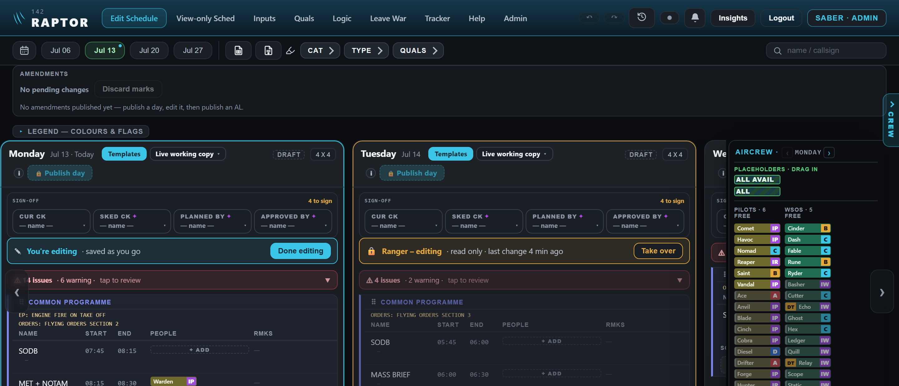
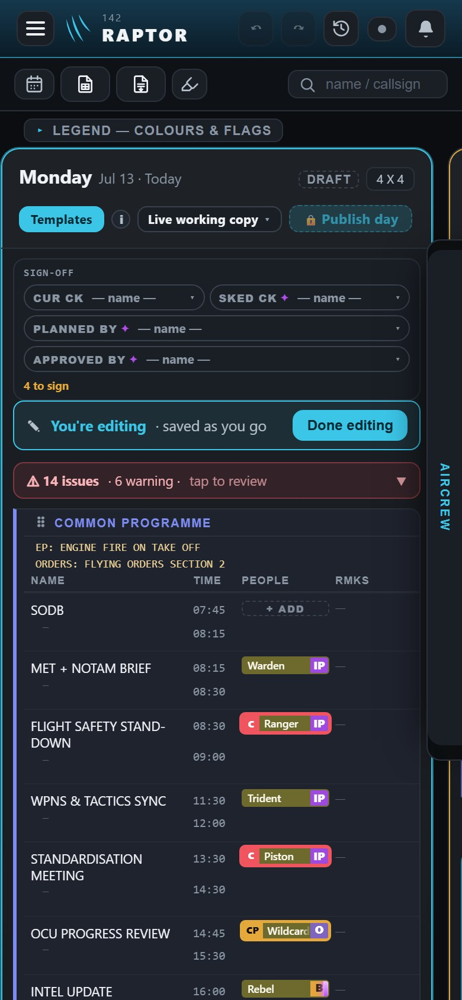
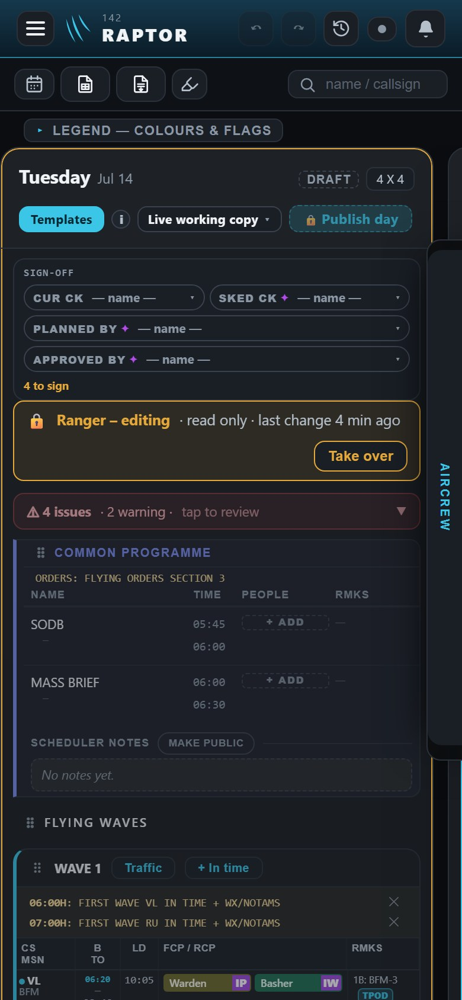
A day no one holds says so, with ✎ Edit Monday. To take several at once, ✎ Edit days… in the row under the top bar lists the week: tick the free ones, then Edit. A day someone else holds is shown and cannot be ticked. On a phone the button reads ✎ Days.
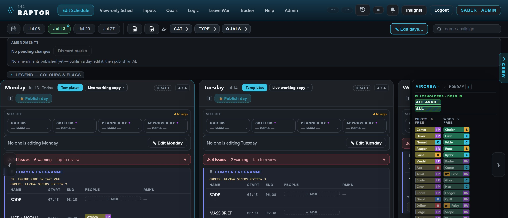
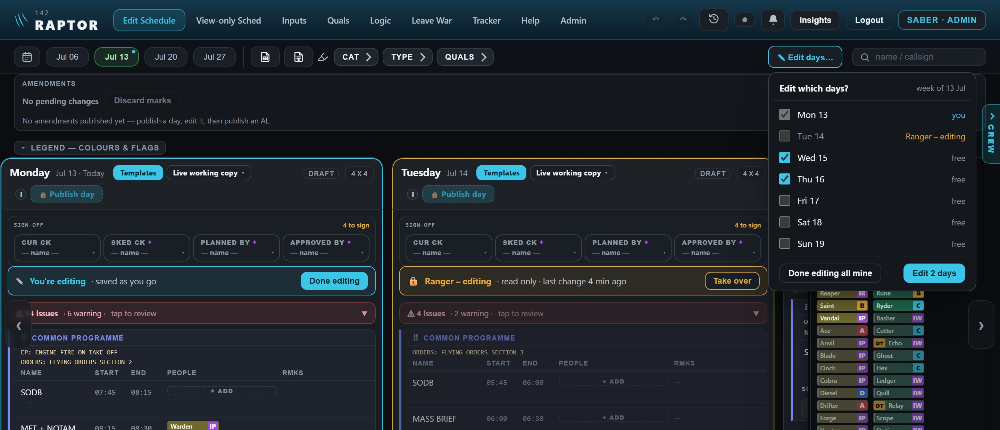
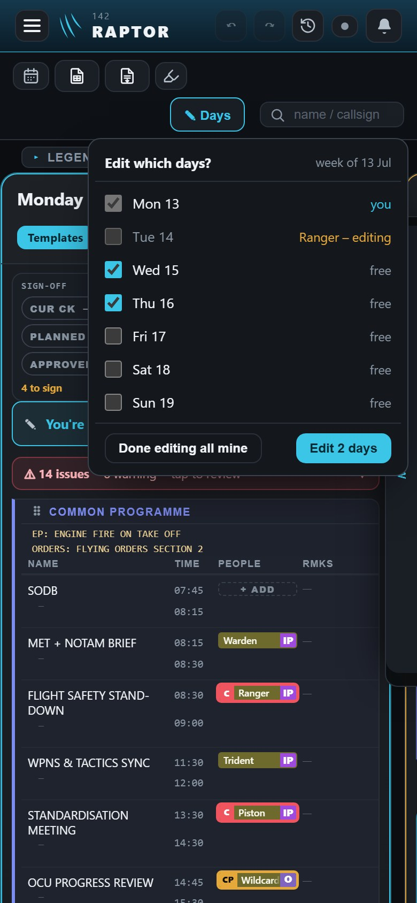
Only the holder sees it, and only after 25 minutes with no change on that day. Looking does not count. Keep editing starts the 30 minutes again; Done editing frees the day now. If nobody answers, the day frees itself at 30 minutes. Closing the page or signing out frees it at once.
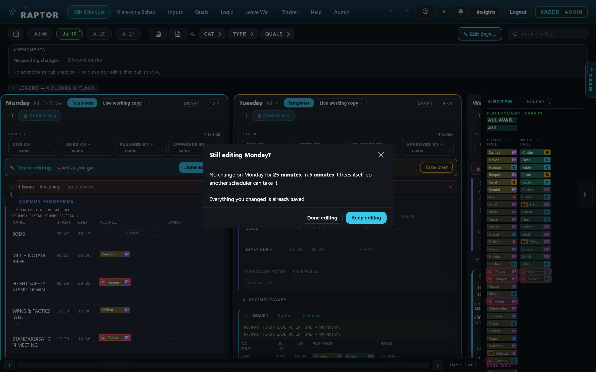
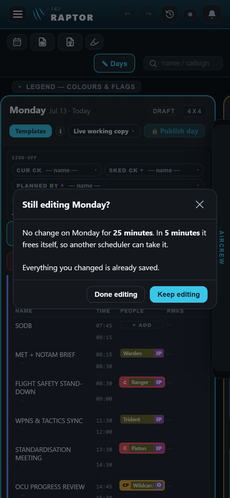
Take over asks first and says how long ago the holder last changed something. Nothing the holder did is lost: it was saved as they went. The holder's screen turns read only and tells them who took the day. The change history keeps a line for it.
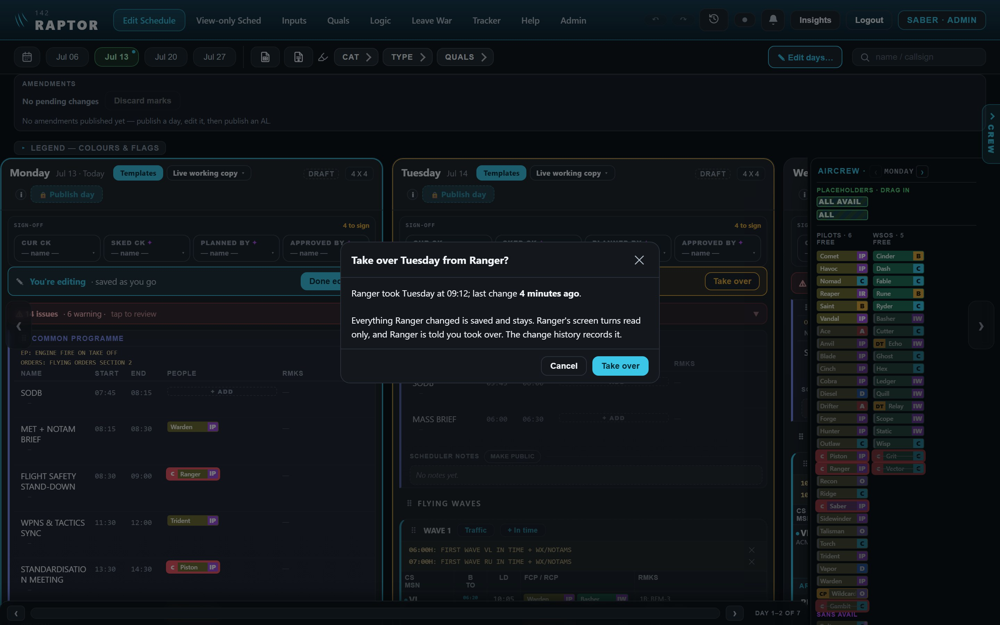
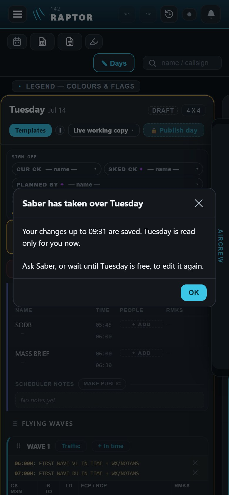
The same strip sits at the top of the board, for the day on screen. Stepping to another day on the board shows that day's strip. ✓ Done closes the board; the day stays yours until Done editing or the 30 minutes (question 3 below).
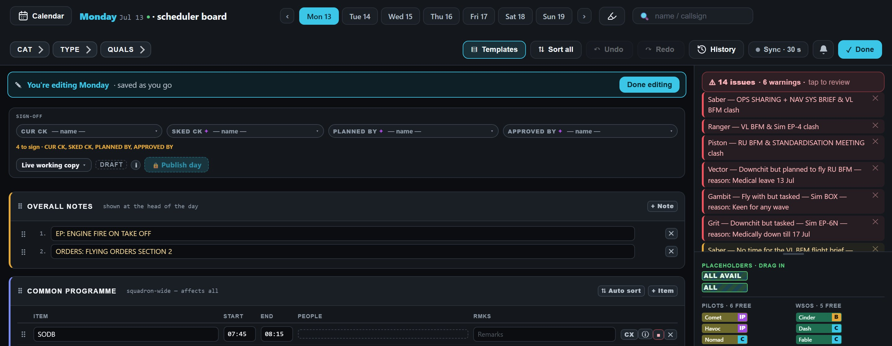
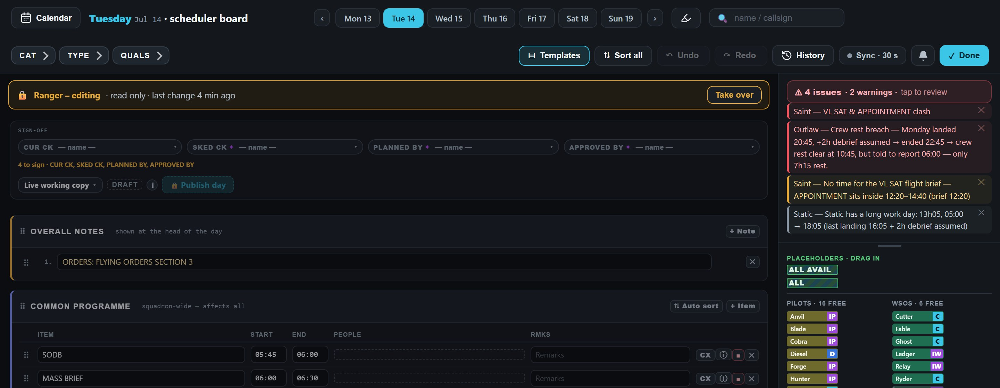
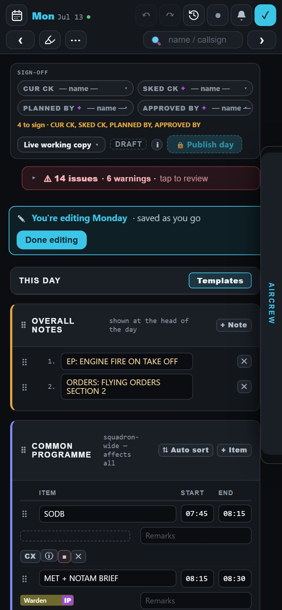
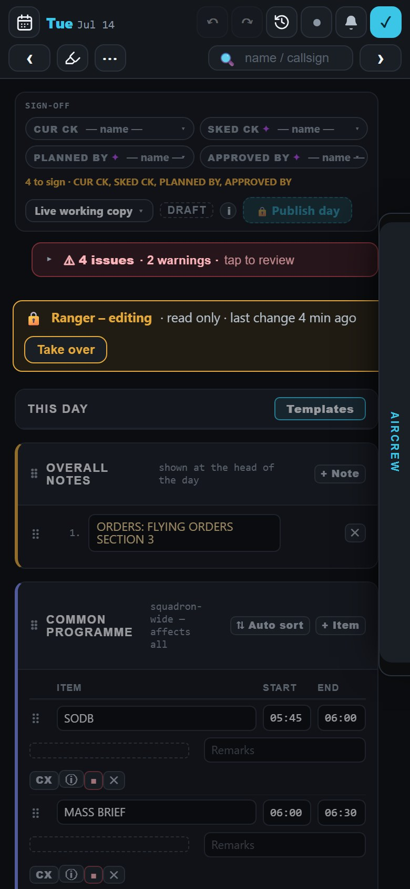
Other people's changes arrive by themselves every 30 seconds while the page is on screen, and straight away when you come back to it. The Sync chip reads "Sync · 30 s". Tapping it opens a small menu: when it last checked, Refresh now, and the Fast sync switch for publishing or a meeting (every second).
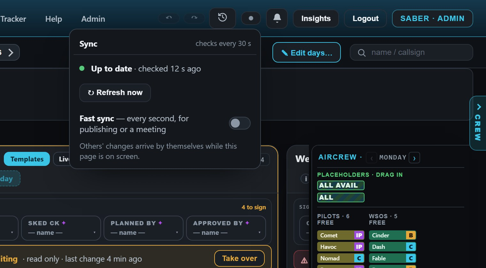
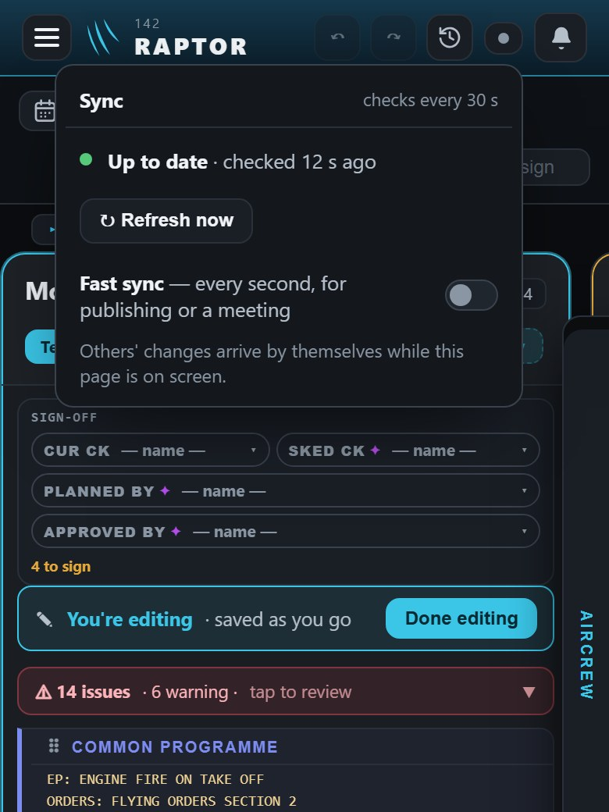